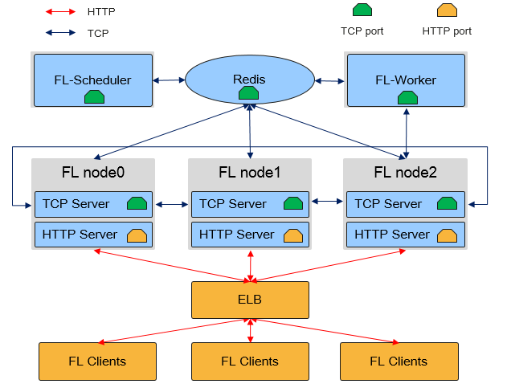

横向联邦云侧部署

本文档以LeNet网络为例，讲解如何使用MindSpore Federated部署横向联邦学习集群。
MindSpore Federated Learning (FL) Server集群物理架构如图所示：

如上图所示，在横向联邦学习云侧集群中，有三种角色的MindSpore进程：Federated Learning Scheduler、Federated Learning Server和Federated Learning Worker：
Federated Learning Scheduler
Scheduler的功能主要包括：协助集群组网：在集群初始化阶段，由
Scheduler负责收集Server信息，并保障集群一致性。开放管理面：向用户提供
RESTful接口，实现对集群的管理。
在一个联邦学习任务中，只有一个
Scheduler，其与Server通过TCP协议通信。Federated Learning Server
Server为执行联邦学习任务的主体，用于接收和解析端侧设备上传的数据，具有执行安全聚合、限时通信、模型存储等能力。在一个联邦学习任务中，Server可以有多个(用户可配置)，Server间通过TCP协议通信，对外开放HTTP端口与端侧设备连接。在MindSpore联邦学习框架中，
Server还支持弹性伸缩以及容灾，能够在训练任务不中断的情况下，动态调配硬件资源。Federated Learning Worker
Worker为执行联邦学习任务的附件模块，用于对Server中的模型进行二次有监督训练，而后将训练所得模型下发给Server，在一个联邦学习任务中，Worker可以有多个(用户可配置)，Worker和Server间通过TCP协议通信。
Scheduler和Server需部署在单网卡的服务器或者容器中，且处于相同网段。MindSpore自动获取首个可用IP地址作为Server地址。
服务器会校验客户端携带的时间戳，需要确保服务器定期同步时钟，避免服务器出现较大的时钟偏移。
准备环节
建议使用Anaconda创建虚拟环境进行如下操作。
安装MindSpore
MindSpore横向联邦学习云侧集群支持在x86 CPU和GPU CUDA硬件平台上部署。可参考MindSpore安装指南安装MindSpore最新版本。
安装MindSpore Federated
通过源码编译安装。
git clone https://gitee.com/mindspore/federated.git -b master
cd federated
bash build.sh
对于bash build.sh，可通过例如-jn选项，例如-j16，加速编译；可通过-S on选项，从gitee而不是github下载第三方依赖。
编译完成后，在build/package/目录下找到Federated的whl安装包进行安装：
pip install mindspore_federated-{version}-{python_version}-linux_{arch}.whl
验证是否成功安装
执行以下命令，验证安装结果。导入Python模块不报错即安装成功：
from mindspore_federated import FLServerJob
安装和启动Redis服务器
联邦学习默认依赖Redis服务器作为缓存数据中间件，运行联邦学习业务，需要安装和运行Redis服务器。
安装Redis服务器：
sudo apt-get install redis
运行Redis服务器，配置端口号为：23456：
redis-server --port 23456 --save ""
启动集群
样例路径。
cd example/cross_device_lenet_femnist
据实际运行需要修改yaml配置文件：
default_yaml_config.yaml，如下为Lenet的相关配置样例。fl_name: Lenet fl_iteration_num: 25 server_mode: FEDERATED_LEARNING enable_ssl: False distributed_cache: type: redis address: 127.0.0.1:23456 # ip:port of redis actual machine plugin_lib_path: "" round: start_fl_job_threshold: 2 start_fl_job_time_window: 30000 update_model_ratio: 1.0 update_model_time_window: 30000 global_iteration_time_window: 60000 summary: metrics_file: "metrics.json" failure_event_file: "event.txt" continuous_failure_times: 10 data_rate_dir: ".." participation_time_level: "5,15" unsupervised: cluster_client_num: 1000 eval_type: SILHOUETTE_SCORE encrypt: encrypt_train_type: NOT_ENCRYPT pw_encrypt: share_secrets_ratio: 1.0 cipher_time_window: 3000 reconstruct_secrets_threshold: 1 dp_encrypt: dp_eps: 50.0 dp_delta: 0.01 dp_norm_clip: 1.0 signds: sign_k: 0.01 sign_eps: 100 sign_thr_ratio: 0.6 sign_global_lr: 0.1 sign_dim_out: 0 compression: upload_compress_type: NO_COMPRESS upload_sparse_rate: 0.4 download_compress_type: NO_COMPRESS ssl: # when ssl_config is set # for tcp/http server server_cert_path: "server.p12" # for tcp client client_cert_path: "client.p12" # common ca_cert_path: "ca.crt" crl_path: "" cipher_list: "ECDHE-RSA-AES128-GCM-SHA256:ECDHE-ECDSA-AES128-GCM-SHA256:ECDHE-RSA-AES256-GCM-SHA384:ECDHE-ECDSA-AES256-GCM-SHA384:ECDHE-RSA-CHACHA20-POLY1305:ECDHE-PSK-CHACHA20-POLY1305:ECDHE-ECDSA-AES128-CCM:ECDHE-ECDSA-AES256-CCM:ECDHE-ECDSA-CHACHA20-POLY1305" cert_expire_warning_time_in_day: 90 client_verify: pki_verify: false root_first_ca_path: "" root_second_ca_path: "" equip_crl_path: "" replay_attack_time_diff: 600000 client: http_url_prefix: "" client_epoch_num: 20 client_batch_size: 32 client_learning_rate: 0.01 connection_num: 10000
准备模型文件，启动方式为：基于权重启动，需要提供相应的模型权重。
获取lenet模型权重：
wget https://ms-release.obs.cn-north-4.myhuaweicloud.com/ms-dependencies/Lenet.ckpt运行Scheduler，管理面地址默认为
127.0.0.1:11202。python run_sched.py \ --yaml_config="yamls/lenet.yaml" \ --scheduler_manage_address="10.113.216.40:18019"
运行Server，默认启动1个Server，HTTP服务器地址默认为
127.0.0.1:6666。python run_server.py \ --yaml_config="yamls/lenet.yaml" \ --tcp_server_ip="10.113.216.40" \ --checkpoint_dir="fl_ckpt" \ --local_server_num=1 \ --http_server_address="10.113.216.40:8019"
停止联邦学习。当前版本联邦学习集群为常驻进程，可执行
finish_cloud.py脚本，以终止联邦学习服务。执行指令的示例如下，其中redis_port传参，需与启动redis时的传参保持一致，代表停止此Scheduler对应的集群。python finish_cloud.py --redis_port=23456
若console打印如下内容：
killed $PID1 killed $PID2 killed $PID3 killed $PID4 killed $PID5 killed $PID6 killed $PID7 killed $PID8
则表明停止服务成功。
弹性伸缩
MindSpore联邦学习框架支持Server的弹性伸缩，对外通过Scheduler管理端口提供RESTful服务，使得用户在不中断训练任务的情况下，对硬件资源进行动态调度。
以下示例介绍了如何通过对应接口，对控制集群扩容/缩容。
扩容
在集群启动后，进入部署scheduler节点的机器，向Scheduler发起请求，查询状态、节点信息.可使用curl指令构造RESTful请求。
curl -k 'http://10.113.216.40:18015/state'
Scheduler将返回json格式的查询结果。
{
"message":"Get cluster state successful.",
"cluster_state":"CLUSTER_READY",
"code":0,
"nodes":[
{"node_id","{ip}:{port}::{timestamp}::{random}",
"tcp_address":"{ip}:{port}",
"role":"SERVER"}
]
}
需要拉起3个新的Server进程，并将local_server_num参数累加扩容的个数，从而保证全局组网信息的正确性，即扩容后，local_server_num的数量应为4，执行指令的示例如下：
python run_server.py --yaml_config="yamls/lenet.yaml" --tcp_server_ip="10.113.216.40" --checkpoint_dir="fl_ckpt" --local_server_num=4 --http_server_address="10.113.216.40:18015"
该指令代表启动四个Server节点，总Server数量为4。
缩容
直接使用kill -9 pid的方式模拟缩容，使用curl指令构造RESTful请求，查询状态，发现集群中少了一个node_id，达到缩容目的。
curl -k \
'http://10.113.216.40:18015/state'
Scheduler将返回json格式的查询结果。
{
"message":"Get cluster state successful.",
"cluster_state":"CLUSTER_READY",
"code":0,
"nodes":[
{"node_id","{ip}:{port}::{timestamp}::{random}",
"tcp_address":"{ip}:{port}",
"role":"SERVER"},
{"node_id","worker_fl_{timestamp}::{random}",
"tcp_address":"",
"role":"WORKER"}，
{"node_id","worker_fl_{timestamp}::{random}",
"tcp_address":"",
"role":"WORKER"}
]
}
在集群扩容/缩容成功后，训练任务会自动恢复，不需要用户进行额外干预。
安全
MindSpore联邦学习框架支持Server的SSL安全认证，要开启安全认证，需要在启动命令加上enable_ssl=True，config_file_path指定的config.json配置文件需要添加如下字段：
{
"server_cert_path": "server.p12",
"crl_path": "",
"client_cert_path": "client.p12",
"ca_cert_path": "ca.crt",
"cert_expire_warning_time_in_day": 90,
"cipher_list": "ECDHE-RSA-AES128-GCM-SHA256:ECDHE-ECDSA-AES128-GCM-SHA256:ECDHE-RSA-AES256-GCM-SHA384:ECDHE-ECDSA-AES256-GCM-SHA384:DHE-RSA-AES128-GCM-SHA256:DHE-DSS-AES128-GCM-SHA256:kEDH+AESGCM:ECDHE-RSA-AES128-SHA256:ECDHE-ECDSA-AES128-SHA256:ECDHE-RSA-AES128-SHA:ECDHE-ECDSA-AES128-SHA:ECDHE-RSA-AES256-SHA384:ECDHE-ECDSA-AES256-SHA384:ECDHE-RSA-AES256-SHA:ECDHE-ECDSA-AES256-SHA:DHE-RSA-AES128-SHA256:DHE-RSA-AES128-SHA:DHE-DSS-AES128-SHA256:DHE-RSA-AES256-SHA256:DHE-DSS-AES256-SHA:DHE-RSA-AES256-SHA:!aNULL:!eNULL:!EXPORT:!DES:!RC4:!3DES:!MD5:!PSK",
"connection_num":10000
}
server_cert_path：服务端包含证书和密钥的密文的p12文件路径。
crl_path：吊销列表的文件。
client_cert_path：客户端包含证书和密钥的密文的p12文件路径。
ca_cert_path：根证书。
cipher_list：密码套件。
cert_expire_warning_time_in_day：证书过期的告警时间。
p12文件中的密钥为密文存储。